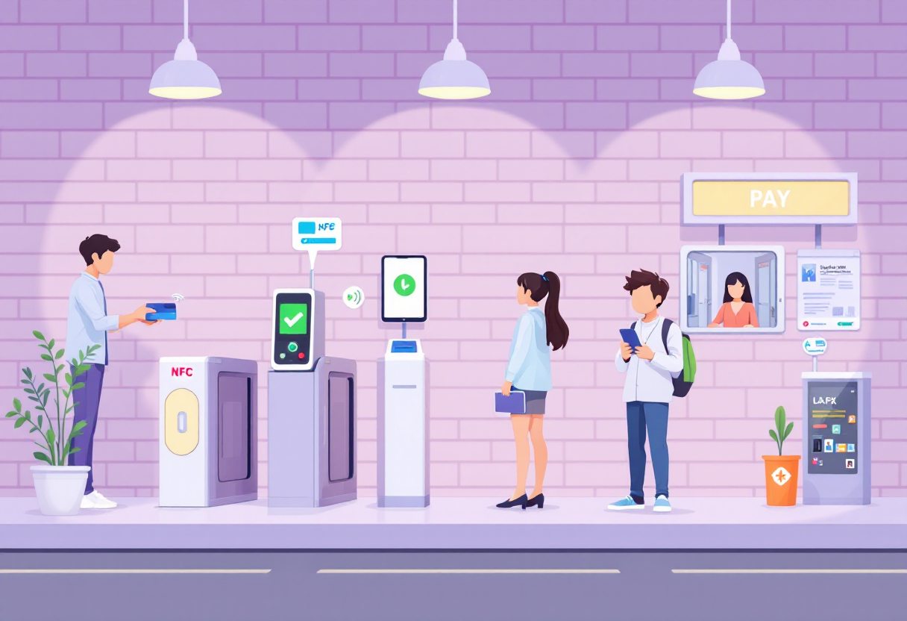
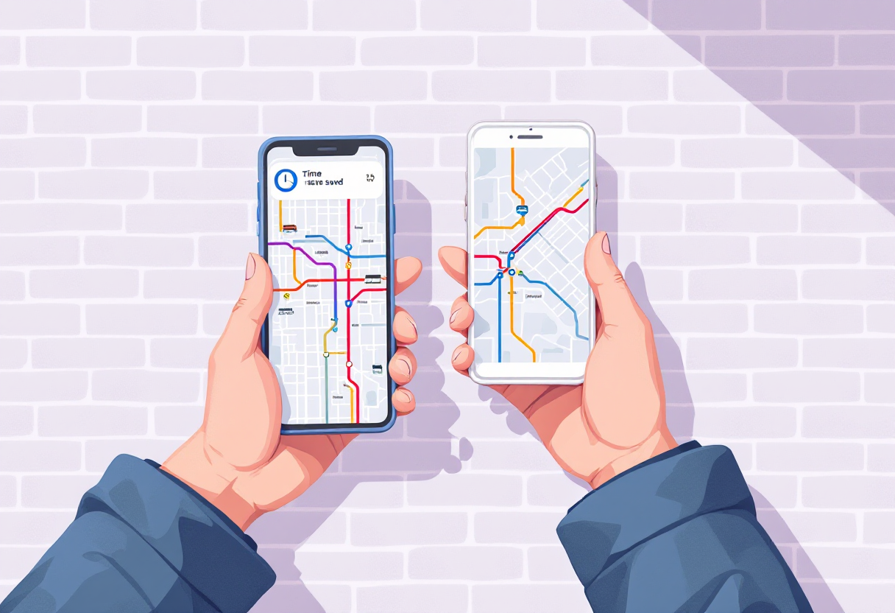
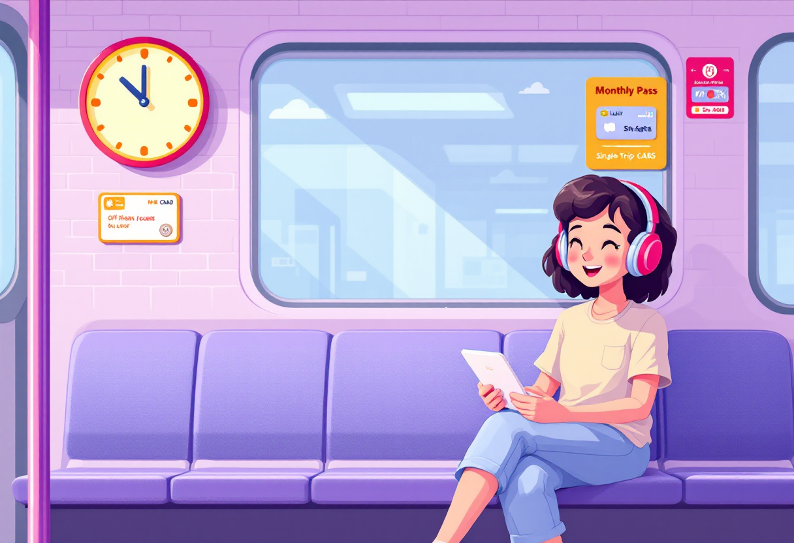
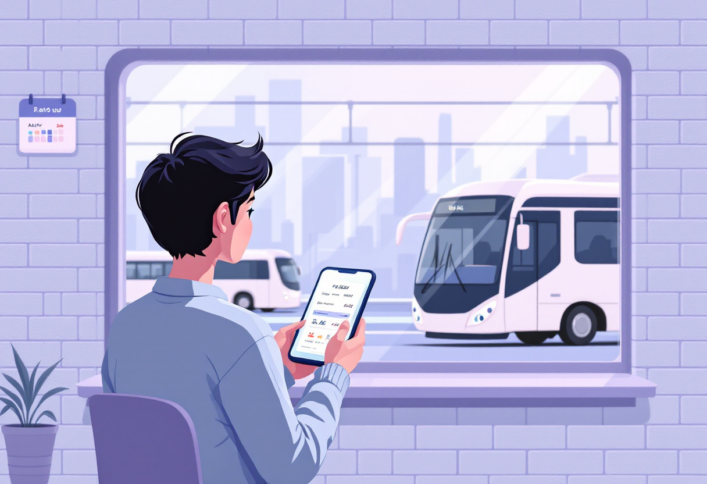

Громадський транспорт
Абонементи, картки, пересадки та лайфхаки для економії часу і грошей у місті.

Транспортна картка
У більшості міст є безконтактна транспортна картка — дешевша за готівку і зручна.
- Придбати можна у касах метро, терміналах або онлайн.
- Поповнення: термінали, онлайн-банкінг або додаток міського транспорту.
- У Києві — картка «Київ Цифровий» або банківська картка з безконтактною оплатою.
- Пільгові категорії (студенти, пенсіонери) — окремі тарифи та картки.

Як будувати маршрут
Правильний маршрут економить до 20–30 хвилин щодня. Користуйся зручними інструментами.
- Google Maps — вказує маршрути з урахуванням громадського транспорту.
- Moovit — спеціалізований додаток для громадського транспорту в Україні.
- Citymapper — є для великих міст, показує реальний час прибуття.
- Плануй маршрут заздалегідь — особливо для незнайомих районів.

Лайфхаки для щоденних поїздок
Невеликі звички, які роблять поїздки комфортнішими і дешевшими.
- Уникай пікових годин (8:00–9:30 та 17:30–19:00) — заощади нерви.
- Стеж за сальдо картки — щоб не застрягти без проїзду.
- Тримай навушники — довгі поїздки можна використати продуктивно.
- Якщо маршрут регулярний — перевір абонемент, він часто вигідніший.

Міжміські поїздки: автобус і поїзд
Для поїздок між містами є кілька зручних варіантів.
- Укрзалізниця — квитки онлайн на сайті або в додатку, знижки за раннє бронювання.
- Автобуси — Busfor, Infobus, FlixBus — порівняй ціни і вибери найкраще.
- Бронюй заздалегідь у вихідні та святкові дні — місця закінчуються швидко.
- Електронний квиток — достатньо показати на телефоні.